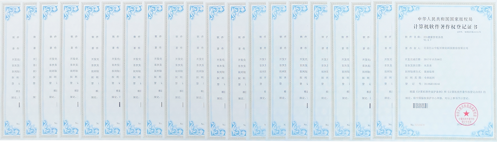

<div class="achievments-view">
    <div class="achievments-content">
      <p class="title">研发成果</p>
      <p class="title-name">原创性发现>></p>
      <p class="text">
        <b>
          乳腺癌早期筛查：
        </b>
        乳腺肿瘤患者除乳腺局部热态差值异常外，其三焦热态分布序列、肝、脾肾热态差值、足少阴肾经红外轨迹、子宫穴热态差值等与对照组比较均具有显著差异；
      </p>
      <p class="text">
        <b>
          艾滋病动态检测：
        </b>
        AIDS患者整体热态分布紊乱，督脉与任脉热态差值倒置，病变主要环节位于中焦肝、胆、脾、胃以及下焦命门和膀胱，ATA热态显示中焦寒凉，下焦湿热；
      </p>
      <p class="text">
        <b>
          子午流注规律：
        </b>
        中医子午流注理论认为人身之气血周流出入皆有定时，据此可以推算出什么疾病应当在什么时辰取什么穴位进行治疗，红外医学热影像技术24小时全程监测健康人经脉影像的研究发现，人体经脉存在与昼夜相关的阴阳开阖、男女差异现象。
      </p>
      <p class="title-name">专利和软著>></p>
      <ul>
        <li *ngFor="let item of storylist">
          
          <p class="name">{{ item.title }}</p>
        </li>
      </ul>
      <div class="img-box">
        
      </div>
    </div>
</div>